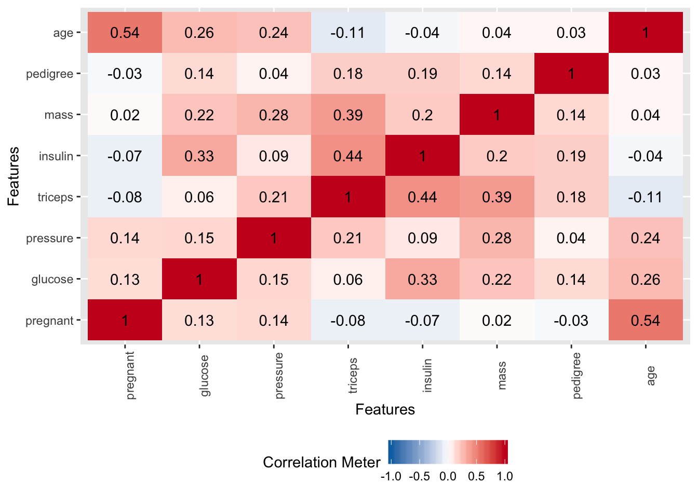
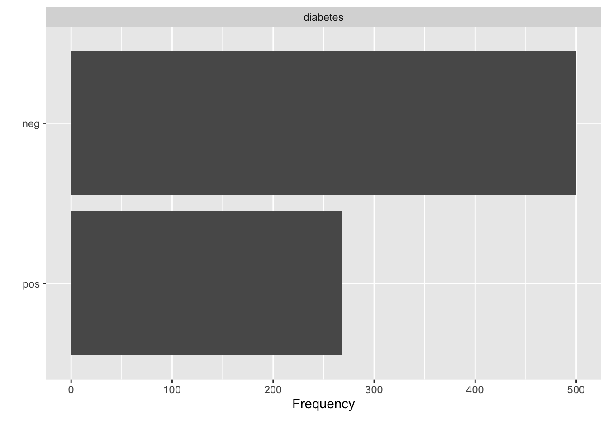

Chapter 2 Getting Hands On
library(tidyverse)
library(mlbench)
library(ROCR)
library(DataExplorer)
library(caret)Let’s consider the Pima Indians Data that is part of the mlbench package. You can install this package via the Tools -> Install Package menu item within RStudio or type the following at the R console prompt:
install.packages("mlbench")Once you have it installed then load it into the work space as follows:
data("PimaIndiansDiabetes")
# Get a shorter handle. I hate typing.
pm <- PimaIndiansDiabetesThe description of the data set is as follows:
So we now have some data on which we can build a model. Specifically, there is a variable in the data called “diabetes” which indicates the disease / diabetes status (“pos” or “neg”) of the person. It would be good to come up with a model that we could use with incoming data to determine if someone has diabetes.
2.1 Important Terminology
In predictive modeling there are some common terms to consider:
2.2 Exploratory Plots
We’ll look use some stock plots from the DataExplorer package to get a feel for the data. Look at correlations between the variables to see if any are strongly correlated with the variable we wish to predict or any other variables.
plot_correlation(pm, type="continuous")
plot_bar(pm)
plot_histogram(pm)
plot_boxplot(pm,by="diabetes")